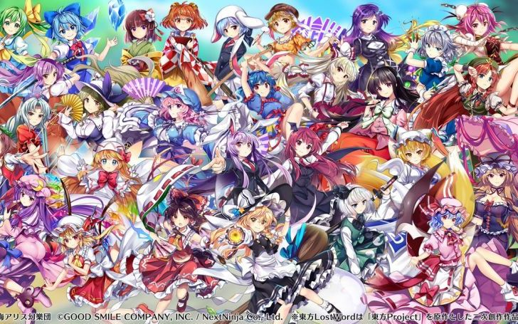

東方プロジェクトとは
ZUN氏が運営する個人サークル「上海アリス幻樂団」によって制作されている、弾幕シューティングゲームを中心とした作品群。1996/11/3に東京電機大学鳩山祭で展示された東方靈異伝を初作品とし、これまでに30作品が生み出されている。そのゲームシステムはいくつかに分かれており、主に弾幕シューティングゲーム、黄昏フロンティアとの合同作品である格闘・弾幕アクションゲームの二つに分けられる。近年では東方獣王園においてはオンラインでの弾幕シューティング対戦が実現された。
キャラクター

作品紹介